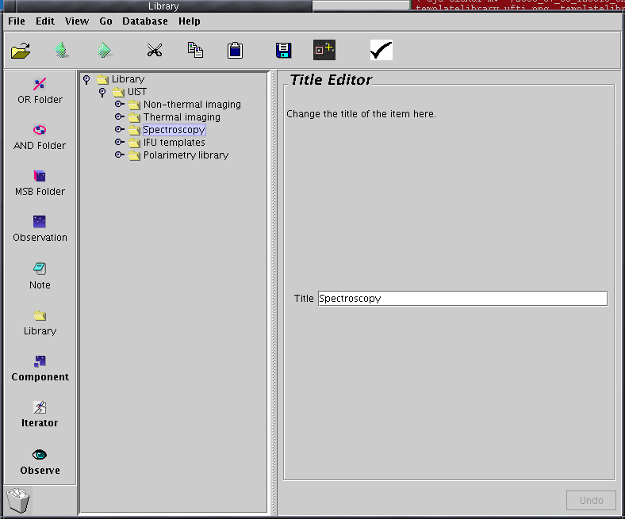
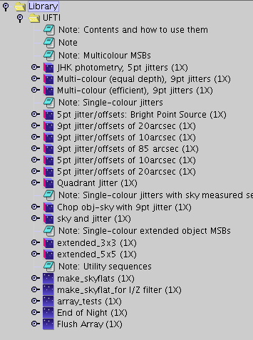
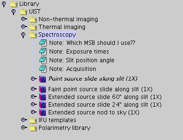
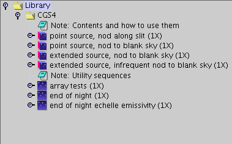
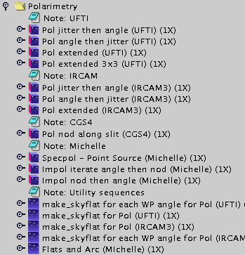
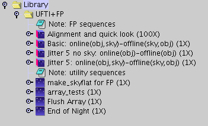

| TEMPLATE LIBRARIES | |
| Some template libraries (the one below is the UIST library) use folders to group template MSBs into categories. Click on the lever next to a folder to open it. |
 |
| The UFTI templates are shown below. Full MSBs are at the top, and utility sequences are at the bottom. You will not need to include utility sequences in your program, since they are independently accessible through the Query Tool at the summit. (A possible exception: if observing bright targets where persistence may be a problem, you might want to copy "Flush Array"s in your MSBs as a reminder to the observer.) |
 |
| The UIST templates are shown below. Spectroscopy has been expanded in the figure. The notes at the top are informative - make sure you read them before copying MSBs into your program. |

|
| The CGS4 templates. As with UFTI, you will not need to include any utility sequences in your program. |

|
| Polarimetry. In this case, skyflat utilities are not accessible via the QT calibrations menu and should be included in your MSBs (the MSBs presented do include them). |

|
| Fabry-Perot library. Again, the sky flat utilities will need to be included explicitly in your program MSBs. |

|